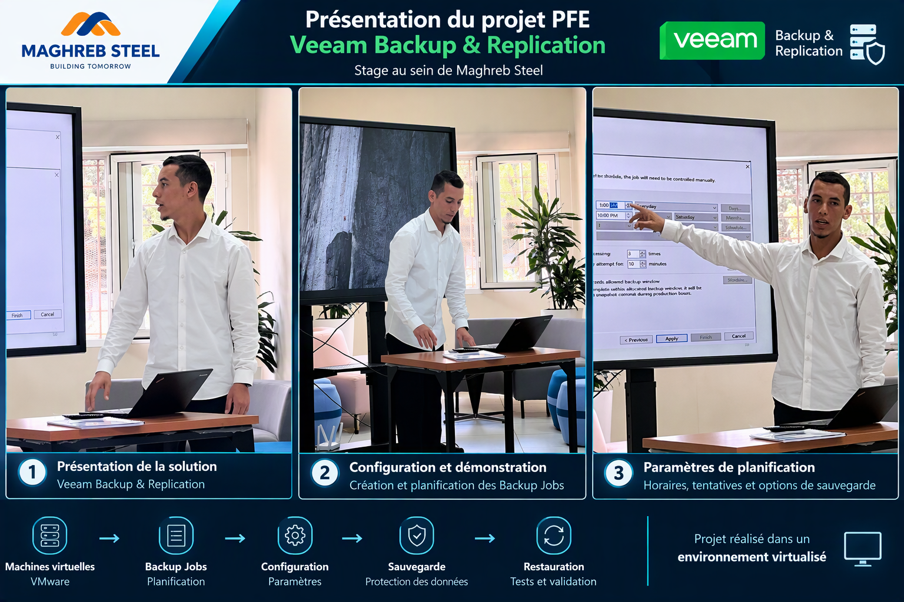

Solution de sauvegarde avec Veeam Backup & Replication
Projet de fin d'études réalisé dans le cadre d'un stage au sein de Maghreb Steel, consacré à l'étude, l'installation et la configuration d'une solution de sauvegarde et de restauration dans un environnement virtualisé.
Contexte & objectifs
Étudier et mettre en œuvre les principes d'une stratégie de sauvegarde permettant de protéger les données et les machines virtuelles.
Contexte du PFE
Le projet a été réalisé durant mon stage de fin d'études au sein de Maghreb Steel. Le travail était consacré à la solution Veeam Backup & Replication et à son utilisation dans un environnement virtualisé pour configurer, planifier et tester des opérations de sauvegarde et de restauration.
Objectifs
Environnement virtualisé
Le projet présente l'utilisation de Veeam Backup & Replication dans un environnement de virtualisation.
Infrastructure virtualisée
Environnement contenant les machines virtuelles utilisées comme sources pour les opérations de sauvegarde et de restauration.
Veeam Backup & Replication
Solution utilisée pour configurer les tâches de sauvegarde, gérer leur exécution et étudier les mécanismes de restauration.
Stockage des sauvegardes
Destination logique utilisée pour conserver les données générées par les tâches de sauvegarde.
Cycle de sauvegarde
Vue simplifiée du fonctionnement étudié pendant le projet.
Étapes du projet
Principales opérations étudiées et présentées dans le cadre du PFE.
Présentation de Veeam
Étude du rôle de Veeam Backup & Replication, de ses principales fonctions et de son utilisation dans la protection des environnements virtualisés.
Installation
Installation de la solution dans l'environnement utilisé pour la réalisation du projet.
Configuration
Préparation des composants nécessaires à la création et à l'exécution des tâches de sauvegarde.
Backup Jobs
Création de tâches de sauvegarde avec sélection des éléments à protéger et définition des paramètres nécessaires.
Planification
Définition des horaires et des fréquences d'exécution afin d'automatiser les opérations de sauvegarde.
Tentatives & reprise
Étude des paramètres liés aux tentatives d'exécution lorsqu'une tâche de sauvegarde ne se termine pas correctement.
Vérification
Contrôle de l'état des tâches et validation du bon déroulement des opérations de sauvegarde.
Restauration
Étude et réalisation de tests permettant de vérifier le principe de récupération des données sauvegardées.
Démonstration & présentation technique
Présentation des principales étapes de configuration de Veeam Backup & Replication, notamment les tâches de sauvegarde et leur planification.

Présentation technique du projet de fin d'études consacré à Veeam Backup & Replication.
Travaux réalisés
Principales tâches réalisées dans le cadre de ce projet de fin d'études.
Analyse des fonctionnalités de Veeam Backup & Replication et des principes de protection des données.
Installation et préparation de la solution dans l'environnement virtualisé du projet.
Création et configuration des tâches de sauvegarde.
Paramétrage des horaires et de l'exécution automatique des tâches de sauvegarde.
Étude des paramètres de reprise et de nouvelle tentative en cas d'échec d'une tâche.
Réalisation de tests afin d'étudier et de valider le processus de restauration.
Technologies & concepts
Résultat du projet
Maîtrise du cycle sauvegarde / restauration
Le projet m'a permis d'approfondir le fonctionnement de Veeam Backup & Replication, depuis la création et la planification des Backup Jobs jusqu'au suivi des tâches et aux tests de restauration dans un environnement virtualisé.